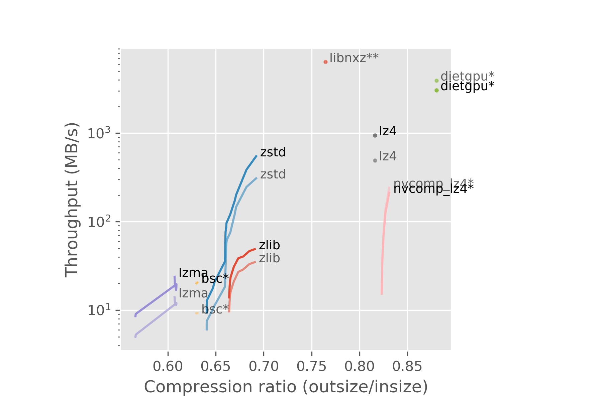
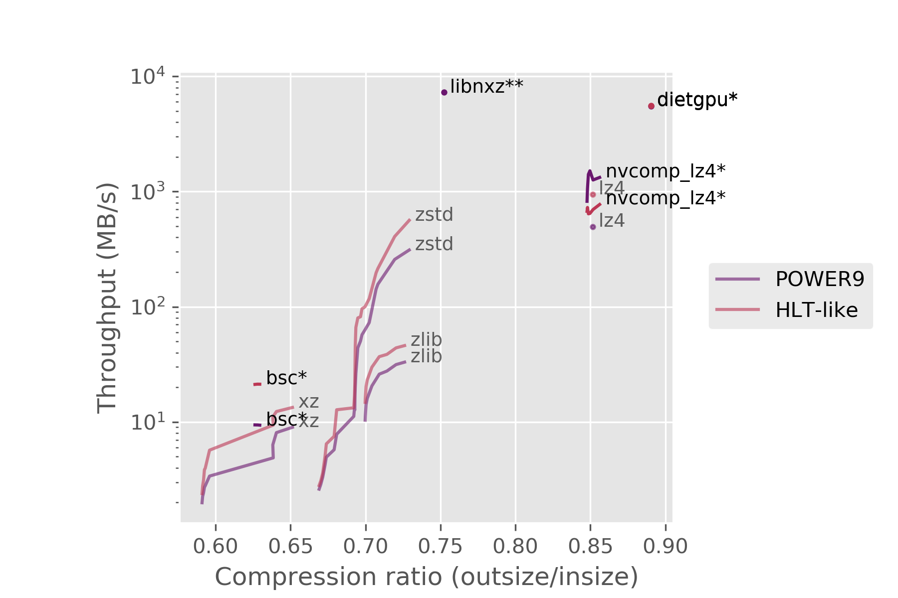
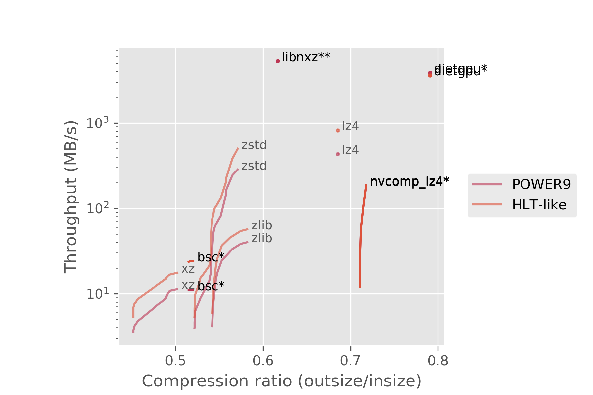

stefan.elias.rua@cern.ch
stefan.rua@iki.fi
I benchmarked lossless compressors that run on the GPU, here are the results:

* = GPU
** = Something else, find out by reading the rest!
The Compact Muon Solenoid (CMS) is a detector and an experiment at CERN. It gather data on collisions taking place in the Large Hadron Collider (LHC). Not all of the data contains interesting events, and it goes through multiple levels of triggers where most of it is discarded. The last trigger is the High Level Trigger (HLT), from which the data is sent to datacenters away from the detector. In order to speed up the network transfers between the HLT and datacenters, the data is compressed.
Currently the data is compressed using CPUs which are used for other things as well. The machines at the HLT are equipped with GPUs, so it would be nice to free up some CPU time by transferring the compression workload onto the GPUs. GPUs can also be very fast.
First I ran some simple tests using the time command and the standalone executables of the compressors. After determining the most promising ones, I implemented them into a benchmarking program called lzbench to get proper measuremets that exclude disk reads and writes. The benchmarks were run on two machines, one that resembles the machines in the HLT and a POWER9 machine. The HLT doesn't have POWER9 machines, but I wanted to try out libnxz, a zlib-compatible library that makes use of the NX GZIP hardware accelerator present on that chip.
These are the compressors I tested in lzbench. Links to these can be found in the "Links" section.
bscdietgpulibxzgzip called NX. libnxz is the library for compressing on it.nvcomplzbench.Two types of collisions take place at the LHC: proton-proton and heavy ion collisions. I ran the benchmarks on both types of data.

* = GPU
** = NX
no star = CPU

* = GPU
** = NX
no star = CPU
Using the CPU compressor zstd seems to be the reasonable choice with our current hardware and the state of GPU compressors. An eye should be kept on dietgpu, as it is still in its infancy and under rapid development. dietgpu uses a compression algorithm called Asymmetric Numeral Systems (ANS)1, which is an important part of zstd as well. This looks promising for a future GPU implementation of zstd.
| Name | Device | Code |
|---|---|---|
bsc |
GPU | https://github.com/IlyaGrebnov/libbsc |
dietgpu |
GPU | https://github.com/facebookresearch/dietgpu |
libnxz |
IBM NX | https://github.com/libnxz/power-gzip |
lz4 |
CPU | https://github.com/lz4/lz4 |
lzma |
CPU | https://www.7-zip.org/ |
nvcomp_lz4 |
GPU | https://github.com/NVIDIA/nvcomp |
zlib |
CPU | http://zlib.net/ |
zstd |
CPU | https://github.com/facebook/zstd |
lzbench, the benchmarking program: https://github.com/inikep/lzbenchlzbench, the benchmarking program: https://github.com/stefanrua/lzbenchgpucomp, the code for my plots and a report: https://github.com/stefanrua/gpucomp